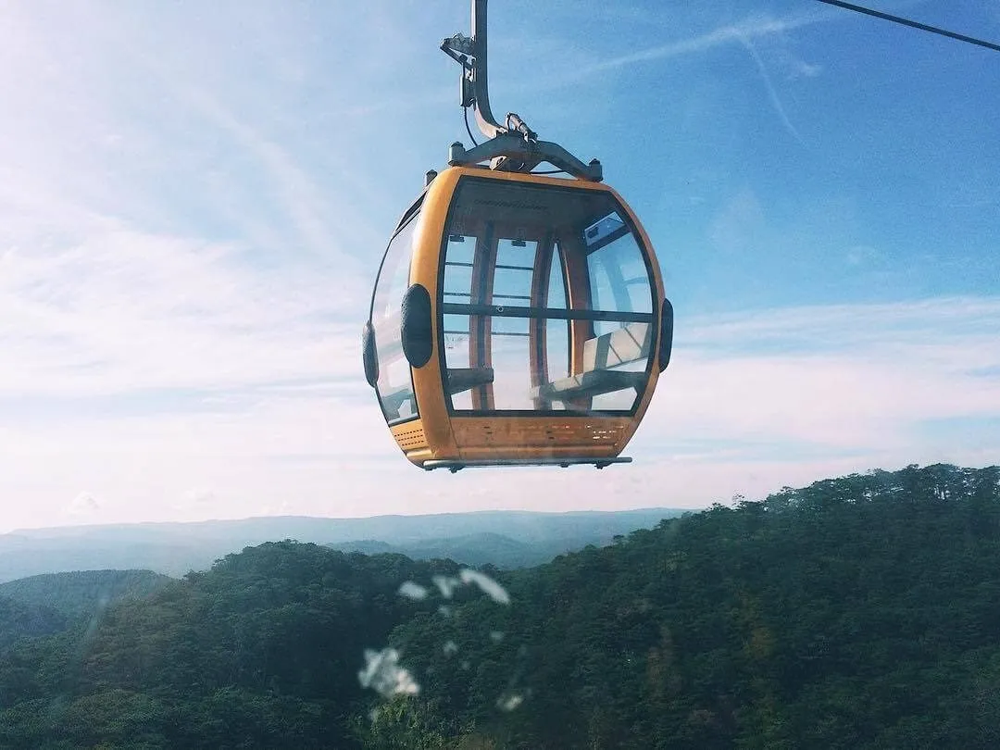
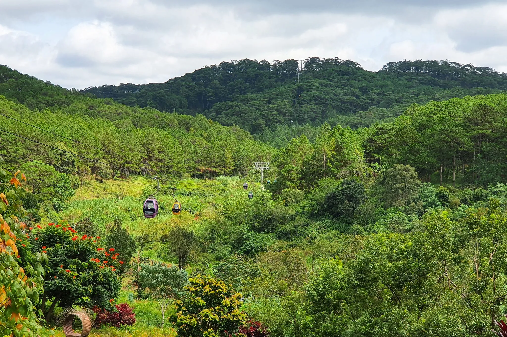
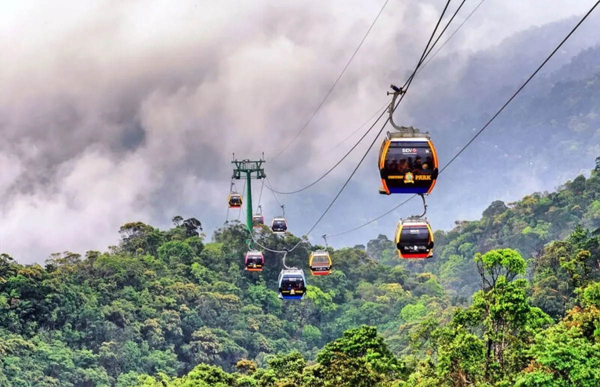
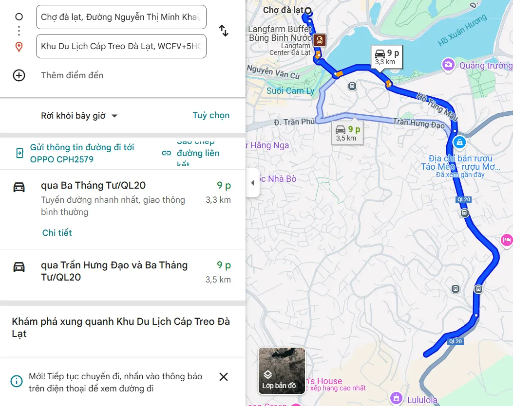
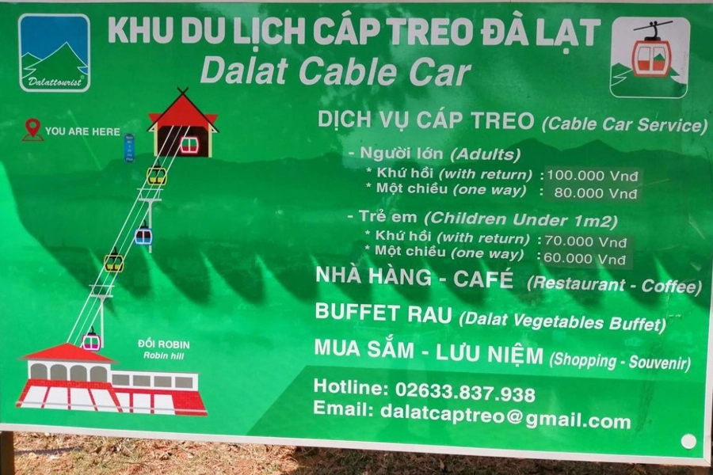
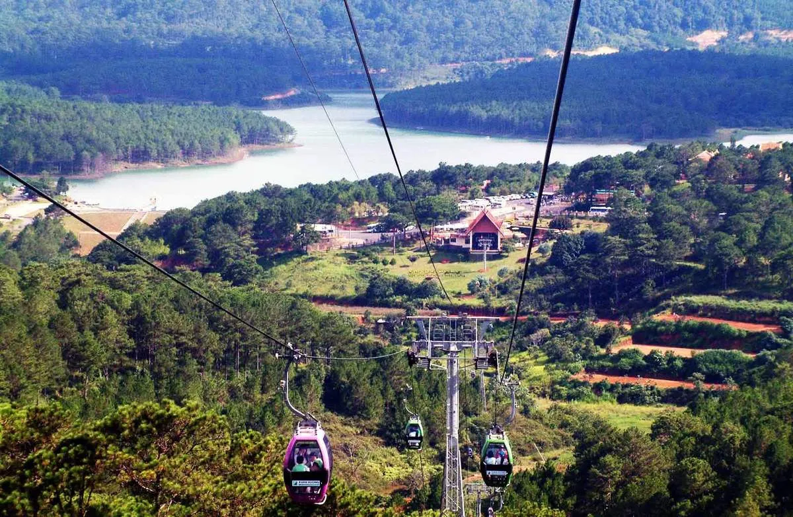
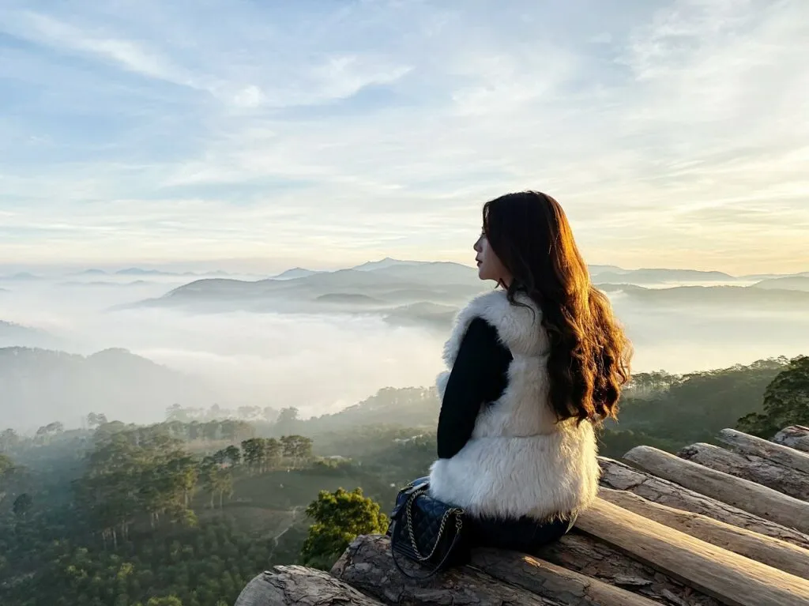

Đồi Robin – Ngắm toàn cảnh Đà Lạt mộng mơ từ trên cao 2025

Mục lục bài viết
- 1. Đồi Robin Đà Lạt – Điểm ngắm toàn cảnh thành phố mộng mơ từ trên cao
- 2. Hướng dẫn đường đi đến Đồi Robin Đà Lạt
- 3. Giờ mở cửa Đồi Robin và giá vé cáp treo Đà Lạt mới nhất
- 4. Kinh nghiệm chinh phục đồi Robin Đà Lạt
- 5. Những lưu ý cần biết khi tham quan đồi Robin Đà Lạt
- 6. Kết thúc ngày dài tại Đồi Robin? Đừng quên ghé Tiệm Nướng & Chill Xóm Lèo nhé!
Nằm trên trục đường đèo Prenn thơ mộng, Đồi Robin còn được biết đến với tên gọi Đồi Robin Cáp Treo nhờ vị trí gần khu du lịch cáp treo nổi tiếng. Đây là một trong những điểm ngắm cảnh lý tưởng nhất của thành phố, đặc biệt dành cho những ai yêu thích vẻ đẹp bao la của thiên nhiên Đà Lạt.

Với hệ thống cáp treo dài khoảng 2.267m xuyên qua rừng thông bạt ngàn, du khách sẽ có cơ hội chiêm ngưỡng toàn cảnh Đà Lạt từ độ cao ấn tượng. Thành phố hiện ra trước mắt như một bức tranh thủy mặc, vừa yên bình vừa thơ mộng, mang đến trải nghiệm thư giãn tuyệt vời giữa không gian trong lành của núi rừng.
1. Đồi Robin Đà Lạt – Điểm ngắm toàn cảnh thành phố mộng mơ từ trên cao
Tọa lạc trên cung đường đèo Prenn thơ mộng, Đồi Robin Đà Lạt – hay còn gọi là đồi Robin Cáp Treo – là điểm dừng chân lý tưởng cho du khách muốn chiêm ngưỡng trọn vẹn vẻ đẹp nên thơ của “thành phố sương mù”. Với tuyến cáp treo dài khoảng 2.267m băng qua rừng thông xanh mát, nơi đây kết nối giữa Đồi Robin và Thiền viện Trúc Lâm – hai điểm đến nổi bật của du lịch Đà Lạt.

Không chỉ hấp dẫn bởi khung cảnh thiên nhiên hùng vĩ, Đồi Robin còn ẩn chứa một câu chuyện lịch sử đặc biệt. Trước năm 1975, khu vực này từng là trận địa pháo Tân Lạc – một vị trí chiến lược trong hệ thống phòng thủ của quân đội ta thời kháng chiến chống Mỹ. Sau hòa bình, đồi Robin được quy hoạch và xây dựng thành hệ thống cáp treo đầu tiên tại Đà Lạt, nhanh chóng trở thành địa điểm tham quan yêu thích của du khách gần xa.

Đứng trên đỉnh đồi, bạn sẽ thu vào tầm mắt toàn cảnh thành phố Đà Lạt thơ mộng với những ngôi nhà mái ngói đỏ ẩn hiện giữa rừng thông, những nhà kính trồng hoa rực rỡ, và biệt thự cổ nhuốm màu thời gian trong làn sương mờ ảo. Trải nghiệm cáp treo từ trên cao mang lại cảm giác thư thái, giúp bạn “thả hồn” vào thiên nhiên và tận hưởng bầu không khí trong lành đặc trưng của cao nguyên.

Không chỉ là điểm ngắm cảnh lý tưởng, Đồi Robin còn là tọa độ check-in cực hot của giới trẻ. Nơi đây thích hợp cho các hoạt động ngoài trời như dã ngoại, picnic, hay đơn giản là thư giãn sau hành trình khám phá Đà Lạt. Vào dịp cuối tuần hoặc lễ lớn, nơi đây thu hút rất đông du khách, vì vậy bạn nên đến sớm để thuận tiện mua vé và tham quan mà không phải chờ đợi lâu.
2. Hướng dẫn đường đi đến Đồi Robin Đà Lạt
Việc di chuyển đến Đồi Robin Đà Lạt khá đơn giản, ngay cả đối với những du khách lần đầu đặt chân đến thành phố ngàn hoa. Bạn có thể bắt đầu từ khu vực chợ Đà Lạt và thực hiện theo lộ trình sau:
-
Từ chợ Đà Lạt, đi qua cầu Ông Đạo, sau đó rẽ trái vào đường Trần Quốc Toản.
-
Tiếp tục chạy thẳng khoảng 400m, bạn sẽ gặp một ngã năm, hãy đi thẳng vào đường Hồ Tùng Mậu.
-
Đi hết đường Hồ Tùng Mậu, bạn sẽ nối vào đường Ba Tháng Tư – trục đường chính dẫn đến đèo Prenn.
-
Gần cuối đường Ba Tháng Tư, bạn sẽ thấy bảng chỉ dẫn lên Đồi Robin, rẽ theo hướng chỉ dẫn là tới nơi.
Tổng lộ trình chỉ mất khoảng 10–15 phút đi xe máy hoặc ô tô từ trung tâm thành phố. Để thuận tiện hơn, bạn có thể sử dụng Google Maps để định vị chính xác và tránh lạc đường. Đây là tuyến đường dễ đi và có thể kết hợp tham quan nhiều địa điểm nổi tiếng lân cận như Thiền viện Trúc Lâm hay Hồ Tuyền Lâm.

3. Giờ mở cửa Đồi Robin và giá vé cáp treo Đà Lạt mới nhất
Đồi Robin Đà Lạt đón khách tham quan hằng ngày trong khung giờ từ 9:00 sáng đến 16:00 chiều. Trong khoảng thời gian này, hệ thống cáp treo Đà Lạt cũng hoạt động liên tục, sẵn sàng phục vụ du khách trải nghiệm chuyến hành trình bay qua rừng thông tuyệt đẹp.
Để có chuyến tham quan trọn vẹn, bạn nên sắp xếp lịch trình phù hợp nhằm tránh đến quá sớm hoặc quá muộn so với thời gian mở cửa. Điều này không chỉ giúp bạn tận hưởng toàn bộ vẻ đẹp của khu vực mà còn tránh việc phải chờ đợi lâu hoặc bỏ lỡ cơ hội ngắm cảnh từ trên cao.
Bảng giá vé cáp treo Đà Lạt (từ Đồi Robin đến Thiền viện Trúc Lâm):
-
Người lớn: 80.000 VNĐ / vé khứ hồi
-
Trẻ em: 50.000 VNĐ / vé khứ hồi hoặc 40.000 VNĐ / vé một chiều
Mức giá trên là hợp lý cho một trải nghiệm độc đáo, nơi bạn có thể ngắm nhìn toàn cảnh Đà Lạt mộng mơ từ độ cao 1.517m giữa không trung, xuyên qua rừng thông bạt ngàn.

4. Kinh nghiệm chinh phục đồi Robin Đà Lạt
4.1 Thời điểm lý tưởng để khám phá đồi Robin Đà Lạt
Nếu bạn đang lên kế hoạch ghé thăm đồi Robin Đà Lạt, khung giờ từ 9h đến 11h sáng chính là lựa chọn hoàn hảo. Vào thời điểm này, thời tiết se lạnh đặc trưng của Đà Lạt kết hợp với nắng nhẹ buổi sáng tạo nên khung cảnh trong lành, dễ chịu. Đặc biệt, ánh nắng không quá gắt sẽ giúp cabin cáp treo không bị chói, mang đến trải nghiệm ngắm cảnh trọn vẹn giữa thiên nhiên xanh mát.

Bên cạnh đó, nếu bạn là người đam mê “sống ảo” và muốn sở hữu những tấm hình lung linh, đừng bỏ lỡ khoảng thời gian từ 14h đến 16h. Lúc này, ánh nắng hoàng hôn nhẹ nhàng xuyên qua rừng thông, phản chiếu lên các cabin tạo nên hiệu ứng ánh sáng rất nghệ thuật. Cảnh sắc thơ mộng, trời chiều dịu nhẹ sẽ là phông nền lý tưởng để bạn ghi lại những khoảnh khắc đáng nhớ khi ngắm toàn cảnh thành phố Đà Lạt từ trên cao.
4.2 Chuẩn bị gì khi chinh phục đồi Robin Đà Lạt?
Để hành trình khám phá đồi Robin Đà Lạt diễn ra suôn sẻ và trọn vẹn, bạn nên chuẩn bị một số vật dụng cần thiết trước khi khởi hành. Dưới đây là những thứ không thể thiếu:
-
Trang phục gọn nhẹ: Ưu tiên những bộ quần áo thoải mái, dễ vận động, kết hợp với giày thể thao hoặc giày leo núi để tiện di chuyển trên địa hình đồi dốc.
-
Phụ kiện đi kèm: Mũ, áo khoác, khăn choàng hay khăn mặt sẽ giúp bạn giữ ấm và bảo vệ khỏi nắng gió.
-
Đồ ăn nhẹ và nước uống: Giúp bạn giữ năng lượng, đặc biệt nếu có ý định tham gia nhiều hoạt động hoặc di chuyển bằng đường bộ.
-
Thiết bị điện tử: Điện thoại, máy ảnh, gimbal… là những món không thể thiếu để ghi lại những khoảnh khắc đáng nhớ giữa khung cảnh thiên nhiên thơ mộng tại đồi Robin.
Một sự chuẩn bị kỹ càng sẽ giúp bạn tận hưởng trọn vẹn không khí trong lành và vẻ đẹp hùng vĩ mà nơi đây mang lại.
4.3 Trải nghiệm hoạt động hấp dẫn tại đồi Robin
4.3.1 Săn mây trên đỉnh đồi Robin – Trải nghiệm không thể bỏ lỡ
Một trong những hoạt động được yêu thích nhất khi đến với đồi Robin chính là săn mây vào buổi sáng sớm. Với độ cao lý tưởng và không gian rộng mở, đồi Robin là điểm ngắm bình minh và săn mây tuyệt đẹp, nơi bạn có thể chiêm ngưỡng bức tranh thiên nhiên huyền ảo với những tầng mây lững lờ trôi giữa rừng thông bạt ngàn.
Thời điểm lý tưởng để săn mây tại đây là từ 5h đến 6h sáng, khi mặt trời bắt đầu ló dạng và ánh nắng đầu ngày chiếu rọi qua những làn sương mỏng. Tuy nhiên, bạn nên chú ý kiểm tra dự báo thời tiết trước khi đi, vì vào những ngày có sương mù dày, khả năng săn mây sẽ bị hạn chế.
Đây chắc chắn là trải nghiệm đáng nhớ dành cho những ai yêu thích thiên nhiên và đam mê khám phá một Đà Lạt mộng mơ trong ánh bình minh.

4.3.2 Trải nghiệm cáp treo đồi Robin – Hành trình trên không ngoạn mục
Sau khi săn mây buổi sớm, đừng bỏ lỡ cơ hội trải nghiệm tuyến cáp treo đầu tiên và lâu đời nhất tại Đà Lạt – hành trình nối liền đồi Robin với Thiền viện Trúc Lâm.
Chỉ với khoảng 12 phút ngồi trên cabin cáp treo, bạn sẽ có dịp chiêm ngưỡng toàn cảnh thành phố Đà Lạt mờ ảo trong sương, rừng thông xanh bạt ngàn và hồ Tuyền Lâm thơ mộng uốn lượn bên dưới. Đây là một trải nghiệm khó quên khi bạn được lơ lửng giữa không trung, tận hưởng không khí trong lành và ngắm nhìn vẻ đẹp nên thơ của cao nguyên.
Điểm đến cuối cùng là Thiền viện Trúc Lâm – một trong những ngôi chùa nổi tiếng và linh thiêng nhất của Đà Lạt. Hành trình cáp treo không chỉ đơn thuần là di chuyển, mà còn là chuyến du ngoạn đầy cảm xúc giữa thiên nhiên xanh mát và tĩnh lặng của xứ sở ngàn hoa.
5. Những lưu ý cần biết khi tham quan đồi Robin Đà Lạt
Để hành trình khám phá đồi Robin Đà Lạt trở nên suôn sẻ và đáng nhớ, bạn hãy ghi nhớ một vài lưu ý quan trọng sau:
-
Hạn chế đi vào dịp lễ, cuối tuần: Đây là thời điểm Đà Lạt đón lượng khách lớn, dễ dẫn đến tình trạng chen chúc, phải xếp hàng dài để mua vé cáp treo.
-
Chuẩn bị tiền mặt đầy đủ: Mặc dù nhiều nơi có hỗ trợ thanh toán thẻ, nhưng mang theo tiền mặt vẫn là lựa chọn an toàn để mua vé và chi tiêu nhỏ lẻ.
-
Tuân thủ quy định khi sử dụng cáp treo: Hãy xếp hàng trật tự, không chen lấn hay xô đẩy để đảm bảo an toàn cho bản thân và mọi người xung quanh.
-
Mua đồ ăn, nước uống nếu cần: Trong khu vực cáp treo có các cửa hàng tiện lợi nhỏ, bạn có thể dễ dàng mua thêm đồ ăn nhẹ nếu quên chuẩn bị trước.
-
Ghi lại khoảnh khắc đáng nhớ: Đừng quên check-in và lưu giữ những bức ảnh đẹp tại đồi Robin – nơi mang lại view ngắm Đà Lạt từ trên cao tuyệt đẹp.
6. Kết thúc ngày dài tại Đồi Robin? Đừng quên ghé Tiệm Nướng & Chill Xóm Lèo nhé!
Sau khi chiêm ngưỡng toàn cảnh Đà Lạt mộng mơ từ đồi Robin, còn gì tuyệt vời hơn khi thưởng thức những món nướng nóng hổi tại Tiệm Nướng & Chill Xóm Lèo? Không gian quán ấm cúng, phong cách phục vụ thân thiện cùng menu đa dạng chắc chắn sẽ làm hài lòng cả những thực khách khó tính nhất.

Đây là điểm dừng chân lý tưởng để bạn thư giãn, nạp lại năng lượng và cùng gia đình, bạn bè tận hưởng buổi tối trọn vẹn giữa lòng phố núi Đà Lạt.
📩 Đặt Bàn: Tại Đây
📍 Địa chỉ: 113 Huỳnh Tấn Phát, Phường 11, Đà Lạt, Lâm Đồng 67000
📌 Chỉ Đường: Xem Chỉ Đường
📞 Hotline: 076.45.27.336 – 08.99.42.84.34 – 0902.91.22.40
Với vẻ đẹp thơ mộng của thiên nhiên núi rừng, không gian thoáng đãng, và hệ thống cáp treo hiện đại – Đồi Robin Đà Lạt chắc chắn là một điểm đến lý tưởng không thể bỏ lỡ trong hành trình khám phá phố núi. Từ những trải nghiệm săn mây huyền ảo, ngắm cảnh từ trên cao, đến hành trình di chuyển bằng cáp treo xuyên rừng thông – tất cả sẽ mang đến cho bạn những cảm xúc đáng nhớ. Và sau chuyến đi, đừng ngần ngại ghé Tiệm Nướng & Chill Xóm Lèo để kết thúc ngày dài bằng một bữa ăn ấm áp, đậm chất Đà Lạt bên người thân yêu.